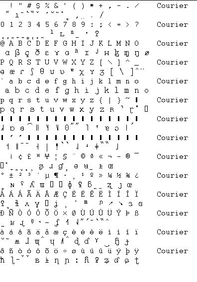

Spraak Research Analyse (februari 2009)
Inleiding
Als de testOrganizer is gestart in de research mode, verschijnt er na het starten van een print-out, een tussenscherm, waarin detail analyses kunnen worden uitgevoerd.
Tabblad Result
|
Door op een item in de gele lijst (target-lijst) te klikken, wordt alle target-regels (=geel) vernieuwd. Idem wit=actual.
Er zijn vaak 2 manieren om de resultaten van een (eenvoudige) RULE te bekijken, als voorbeeld de RULE fric->plos:
1.klik in zowel de gele als de witte lijst op de gewenste RULE (FR2PL)
2. klik in de target-lijst op FRIC en in de actual-lijst op PLOS
Op deze wijze kunnen dus ook niet bestaande Rules direct worden getest, zonder deze in de LAL-file in te voeren.
In de actualstring en de targetstring, wordt het optreden van de te toetsen variabelen weergegeven door een rode letter.
Bij een sequentie, wordt enkel de eerste klank van een sequentie op deze wijze gemarkeerd.
|

|
In het tabblad RESULT, worden alle rules (zwart), met hun score en alle woorden waarin deze rule van toepassing is, worden in rood/blauw weergegeven (rood als een positie voldoet, anders blauw)
De header bevat alle algemene gegevens en syntax fouten zijn aangegeven in rood. Met behulp van de printknop kan dit tabblad (in kleur) worden afgedrukt. Het is zelfs mogelijk hierin te editten. De aangebrachte wijzingingen in de tekst worden uiteraard niet opgeslagen maar wel afgedrukt.
In het tabblad LAL, kan de analysefile worden geedit en alle berekeningen opnieuw worden uitgevoerd, zie hieronder.
Tabblad LAL-file
|
Het tabblad LAL-file geeft de exacte inhoud van het bestand weer. Zuivere commentaar regels worden in zwart afgebeeld, alle syntactisch correcte analyseregels in blauw en de regels met syntax fouten in rood.
Met de knop OPEN, kan een ander analyse bestand worden opgeroepen, waarna de berekening automatisch opnieuw wordt uitgevoerd.
De lal-tekst kan worden gewijzigd, zodra dit gebeurt zal het groene veld met de bestandsnaam rood kleuren, ten teken dat er iets is gewijzigd.
Door op de knop BEREKEN te drukken, worden de wijzigingen opgeslagen en alle berekeningen opnieuw uitgevoerd.
Het bestand kan in kleur worden afgedrukt met de knop PRINT.
|

|
Lipp Export
todo
Syntax
Bij het ontwerp van de syntax is getracht zoveel mogelijk aan te sluiten bij de syntax van LIPP.
Overbodige en/of irrelevante definities zijn weggelaten.
Hier en daar is de wiskundige basis consistenter gemaakt, waardoor als bijkomend voordeel het gebruik van buffers is vereenvoudigd.
Toegevoegd zijn:
- Commando's voor een leesbare omschrijving van de variabelen / rules
- Definities van normen
Algemeen
Formules worden geschreven in normale presentatie (dus geen RPN).
Een statement mag over meerdere regels worden uitgeschreven.
Het einde van een statement wordt gemarkeerd door een punt-komma (:).
Statements worden in volgorde van binnenkomst verwerkt.
Recursie is niet toegestaan.
In het rapport worden bij de omschrijvingen, de leading en trailing spaces en %-tekens verwijderd.
Geïmplementeerde Syntax
Definitie van een variabele, enkel bestaande uit kenmerken
DEF VAR "<naam>" = {xxx} ; <omschrijving>
Definitie van een (tussen-) variabele, samengesteld uit een combinatie van andere variabelen en operators,
deze variabele wordt niet opgenomen in het gebruikers rapport
DEF RULE "<naam>" = (<formule>) ; <omschrijving>
Idem, echter resultaat wordt vermeld in het gebruikers rapport
DEF EXEC RULE "<naam>" = (<formule>) ; <omschrijving>
Definitie van een kenmerk-gelijkheid (voor gebruik in variabelen)
[C]
Definitie van een norm voor een variabele (heeft alleen zin voor DEF EXEC RULE)
DEF NORM "<naam>" = 32% ; <omschrijving>
DEF VAR "<naam>" = {xxx} ; <omschrijving>
Definiëert een set van kenmerken, welke wordt getest op elke afzonderlijke klank in de doeltekst en de uitgesproken tekst.
<naam> is de gewenste naam voor de variabele
xxx geeft de vereiste waarden (0 ... 16) op de verschillende kenmerken (A ... P).
<omschrijving> is enkel bedoeld om de LAL-file in een later stadium beter leesbaar te maken.
Indien een variabele-naam meer dan 1 keer wordt gedefiniëerd, wordt een foutmelding gegenereerd.
Verschillende waarden voor 1 kenmerk kunnen op de volgende wijze verkort worden genoteerd
B[1-3] = B[1] B[2] B[3] voor dit kenmerk wordt een klank getest op een waarde van 1,2 of 3
B[1,2,5] = B[1] B[2] B[5] voor dit kenmerk wordt een klank getest op een waarde van 1,2 of 5
Als van een kenmerk (A ... P) geen waarden zijn opgegeven, dan wordt dit kenmerk niet getest !!!
Voorbeeld 1:
DEF VAR "PLOS" = { B[1] } ;
De variabele PLOS is waar, als voor het kenmerk B een waarde van 1 geldt, de waarden van de overige kenmerken zijn niet van belang.
Voorbeeld 2:
DEF VAR "AAP" = { B[1] C[0] } ;
De variabele AAP is waar, als voor het kenmerk B een waarde van 1 geldt én voor het kenmerk C een waarde van 0 geldt, terwijl de waarden van de overige kenmerken niet van belang zijn.
DEF RULE "<naam>" = ( (vvv1) -> (vvv2) ) ; <omschrijving>
DEF EXEC RULE "<naam>" = ( (vvv1) -> (vvv2) ) ; <omschrijving>
DEF EXEC RULE "<naam>" = (logische combinatie van variabelen) ; <omschrijving>
DEF EXEC RULE "<naam>" = (sequentie van variabelen) ; <omschrijving>
DEF EXEC RULE "<naam>" = (transcriptie) ; <omschrijving>
IEDERE COMBINATIE VAN BOVENSTAANDE
Definiëert een transcriptie van een set kenmerken in het doelwoord (vvv1) naar een set kenmerken in de uitgesproken tekst (vvv2).
De toevoeging EXEC, betekent dat de uitkomst in het resultaat-rapport wordt vermeld, verder zijn de statements geheel identiek.
<naam> is de gewenste naam van de transcriptie.
vvv1 en vvv2 zijn sequenties van variabelen (of enkelvoudige variabelen). Beide sequenties mogen een ongelijke lengte hebben. De variabelen moeten reeds gedefiniëerd zijn.
In plaats van een transcriptie, mag een regel ook worden gedefiniëerd als een logische functie van eerder gedefiniëerde transcripties.
<omschrijving> een omschrijving van de variabele, welke bij EXEC ook in het rapport wordt vermeld
Het resultaat van een transcriptie bestaat altijd uit 2 getallen, het aantal keren dat de kenmerken vvv1 in het doelwoord voorkomen (ook wel "noemer" genoemd) en het aantal keren dat op dezelfde positie de kenmerken vvv2 in de uitgesproken tekst gelden (de gezochte transcriptie optreedt) (ook wel "teller" genoemd).
Dus 2 / 5 betekent, in de doelwoorden is 5 maal de set kenmerken vvv1 voorgekomen, in twee van deze gevallen is een transcriptie naar de kenmerken vvv2 opgetreden.
Voorbeeld 1:
DEF EXEC RULE "FR2PL" = ( ( Fric ) -> ( Plos) ) ;
Voorbeeld 2:
DEF RULE "OmECSylF1" = ( ( VGpX TC A# ) -> ( VGpX A# ) ) ;
DEF RULE "OmECSylF2" = ( ( VGpX TC NilX A# ) -> ( VGpX A# ) ) ;
DEF EXEC RULE "OmECSylF" = ( OmECSylF1 OR OmECSylF2 ) ;
Voorbeeld 3 (wiskundig identiek aan voorbeeld 2)
DEF EXEC RULE "OmECSylF" = ( ( ( VGpX TC A# ) -> ( VGpX A# ) ) OR
( ( VGpX TC NilX A# ) -> ( VGpX A# ) ) ) ;
Kenmerk-gelijkheid [A] [B] ... [P]
De kenmerk-gelijkheid is in feite in gewone (voorgedefiniëerde) variabele, welke altijd aanwezig is.
De kenmerk-gelijkheid toetst één specifiek kenmerk (A,B,..P) op zowel targetstring als actualstring en vergelijkt vervolgens beide resultaten. Deze bits-gewijze vergelijking levert enkel TRUE op als zowel actualstring als targetstring true zijn. Met andere woorden de toetsing op bijvoorbeeld [A] levert alleen dan een TRUE op, als op de desbetreffende positie de kenmerk-waarde-A in targetstring en actualstring identiek zijn.Het gebruik van buffers in LIPP is vreemd en wiskundig niet consistent. Door een gewijzigde syntax kan hetzelfde worden bereikt, wel wiskundig consistent, waardoor de implementatie eenvoudiger wordt. Aan de hand van een voorbeeld zal dit duidelijk gemaakt worden.
De oorspronkelijke LIPP rule: DEF VAR "TC" = { B[1-8] } ;
DEF EXEC RULE "AAP" = ( ( TC AND ( [ B1:=A , B2:=B ] ) ) -> ( TC AND ( NOT [ B1=A , B2=B ] ) ) ) ;
De betekenis hiervan is:
bepaal het aantal overgangen TC -> TC , waarbij tevens de waarden van de kenmerken A en/of B verschillen.
Het vreemde aan bovenstaande regel is dat de eerste AND operator een fake operator is. Bij de evaluatie van deze formule moet derhalve een speciale constructie gemaakt worden. Dezelfde regel kan ook als volgt worden geschreven
DEF EXEC RULE "AAP" = ( TC -> ( TC AND ( NOT ( [ A ] ) OR NOT( [ B ] ) ) ) );
Deze regel bevat geen fake operatoren, is wiskundig geheel correct, daarom eenvoudig te evalueren en bovendien, de menselijke interpretatie is direct af te lezen !!!
Normen
Normen worden vermeld in het gebruikers-rapport.
DEF NORM "<naam>" = 32% ; <omschrijving>
Over de interpretatie bestaat nog diskussie.
Specifieke Voorbeelden
Hieronder zijn een aantal specifieke voorbeelden verzameld. Tevens een aantal regels uit oude LIPP-bestanden (o.a. Analog.lal), die naar mijn mening (wiskundig) fout zijn, omdat ze redundante condities bevatten.
Sequentie, vervanging LIPP-buffer DEF EXEC RULE "Aap" = ( TC & TV ) ; Dit is dus een variabele die vermeld wordt in het gebruikers rapport
DEF EXEC RULE "Beer" = ( NOT [C] ) ; Vermeld alle posities waarop kenmerk C een ongelijke waarde heeft
Foute syntax: DEF GLOB "SylOnset" = ( ( A# CGpX ) OR A# ); Correcte syntax (maar direct in de nieuwe notatie) DEF RULE "SylOnset" = ( A# );
Foute syntax: DEF EXEC RULE "SubPlace" = ( ( TC AND ( [B1:=A, B2:=B, B3:=C, B4:=D] ) ) -> ( TC AND ( NOT [B1=A] ) ) ) ; Correcte syntax (maar direct in de nieuwe notatie) DEF EXEC RULE "SubPlace" = ( TC -> ( TC AND NOT ( [A] ) ) ) ;
Wiskunde
Doel van de analyse is om de fout uitgesproken woorden nader te analyseren en met name na te gaan welk soort fouten er zijn gemaakt. Daarvoor worden eerst alle fout uitgesproken woorden opgezocht, ten tweede wordt bekeken of het fout uitgesproken woord wel de juiste lengte heeft (anders kan geen goede vergelijking worden gemaakt). Vervolgens worden alle fout uitgesproken woorden (van de juiste lengte) achter elkaar gezet, met tussen ieder woord een uitroepteken (!), waardoor 1 lange string van de uitspraak onstaat (actual-string). De bijbehorende doelwoorden worden op dezelfde manier achter elkaar geplakt (target-string). Voorbeeld:
bAnK ! xl c ! {actual-string: de uitgesproken tekst}
bank ! glas ! {target-string: de doelwoorden}
Iedere klank, aangeduid met een letter uit het fonetisch alfabet, heeft daartoe een aantal kenmerk-waarden op de 16 kenmerken (A,B,..P). Deze kenmerken zijn gedefinieerd in het bestand lipp_ascii.ini. Voorbeeld, de fonetische klank met de ascii-waarde van A, heeft de kenmerk-waarde-A=18, kenmerk-waarde-B=16, kenmerk-waarde-D=1 en nul op alle overige kenmerk-waarden.
[kenmerk A B C D E F G G I J K L M N O P]
A 65= 18,16,00,01,00,00,00,00,00,00,00,00,00,00,00,00
F 70= 09,03,00,01,00,00,00,00,00,00,00,00,00,00,00,00
In eerste instantie worden fonetisch logische deelverzamelingen van kenmerken gemaakt. Voorbeeld, een True Vowel (TV) wordt gedefinieerd als een kenmerk-waarde-B van 11 t/m 16, terwijl de overige kenmerk-waarden niet van belang zijn.
TV = B [11-16]
Door nu zowel de target-string als de actual-string te toetsen op de voorwaarden True Vowel, ontstaat de variabele TV. Met behulp van formules kunnen variabelen worden gecombineerd en vergeleken. De uitkomst van een formule geeft aan hoe vaak aan de gevraagde kriteria is voldaan.
LIPP-getal
Intern wordt gerekend met zogenaamde LIPP-getallen. Een LIPP-getal bestaat uit twee serie booleans, gepresenteerd als 2 strings, waarbij 0=false, 1=true en !=woordscheidingsteken (de spaties in het voorbeeld dienen enkel ter verduidelijking).
Voorbeeld van een LIPP-getal:
1101 ! 11001 ! 110 {evaluatie van de uitgesproken tekst, Actual-string, A}
TV = ------------------
1011 ! 10100 ! 001 {evaluatie van de target tekst, target-string, T}
Alleen uitgesproken woorden die een gelijke lengte als het doelwoord hebben, worden geëvalueerd, derhalve staan de woordscheidingstekens in beide strings altijd op dezelfde plaats. Een LIPP-getal wordt gecreëerd door de definitie van een variabele of door een rechtstreekse kenmerk-vergelijking. De posities van de enen (1) in de Actual-string, geeft de posities van de gevraagde variabele in de uitgesproken woorden aan. Door het aantal enen (1) te tellen, wordt het aantal "occurences" van een bepaalde variabele verkregen. De samenvatting wordt verkregen door het aantal enen in beide strings te tellen, hetgeen een compressed LIPP-getal oplevert als 2/5, Hetgeen te interpreteren is als "de getoetste uitspraak voldoet in 2 van de 5 mogelijke gevallen".
Kenmerk-gelijkheid
De kenmerk-gelijkheid is in feite in gewone (voorgedefiniëerde) variabele, welke altijd aanwezig is. De kenmerk-gelijkheid toetst één specifiek kenmerk (A,B,..P) op zowel targetstring als actualstring en vergelijkt vervolgens beide resultaten. Deze bits-gewijze vergelijking levert enkel TRUE op als zowel actualstring als targetstring true zijn. Met andere woorden er treedt een true op als op het gevraagde kenmerk een exacte gelijkheid van de kenmerk-waarde aanwezig is. In onderstaand voorbeeld (kenmerk-gelijkheid-C) zijn A1 en T1 dus ook altijd gelijk.
A1
[C] = -----
T1
Operatoren
Formules worden gemaakt door LIPP-getallen te combineren met operatoren. De uitkomst van een formule is altijd weer een LIPP-getal. De volgende operatoren worden ondersteund:
- unary logische operatoren: NOT
- binairy logische operatoren: AND OR < <= = > >=
- sequency operator: &
- transcriptie operator: ->
Alle operatoren worden bitsgewijs op de variabelen toegepast.
Unary operator: NOT
Dit is een bits-gewijze NOT-operator, op zowel de targetstring alsook op de actualstring.
A1 NOT ( A1)
NOT ---- = ---------
T1 NOT (A2)
Binairy operatoren : AND OR < <= = > >=
Dit is een bits-gewijze binairy operator, op zowel de targetstring alsook op de actualstring.
A1 A2 A1 AND A2
------ AND ------ = -------------------
T1 T2 T1 AND T2
Sequency operator: &
Een sequentie is een reeks opeenvolgende klanken, waarbij iedere klank wordt getoetst op zijn eigen (gelijk of verschillend) kriteria.
SEQ_Vooorbeeld = ( TC & TV)
Een sequentie moet omgeven zijn door ronde haken, daar de evaluatie van deze operator van achter naar voren moet plaatsvinden (zie onderstaand voorbeeld van een sequentie van 3 LIPP-getallen).
A1 A2 A1 AND SHL ( A2 )
------ & ------ = -------------------------------
T1 T2 T1 AND SHL ( T2 )
A1 A2 A3 A1 AND SHL ( A2 AND SHL ( A3 ) )
------ & ------ & ----- = ---------------------------------------------------------
T1 T2 T3 T1 AND SHL ( T2 AND SHL ( T3 ) )
Transcriptie operator: ->
Zoekt naar overgangen van kriteria in de targetstring naar (andere of gelijke) kriteria in actualstring. De posities die aan de kriteria voldoen in de targetstring zijn T1 en de kriteria voor de actualstring zijn A2. Omdat het om een transcriptie gaat zijn A1 en T2 niet van belang. Dus de mogelijkheden die voldoen op basis van de targetstring zijn T1. De echte overgangen die voldoen aan beide kriteria worden dus gevormd door T1 AND A2.
A1 A2 T1 AND A2
------ -> ------ = -------------------
T1 T2 T1
Kenmerken bestand LIPP_ASCII.INI
Opmerking: Dit bestand kan met een kale ASCII tekstverwerker (b.v. notepad) worden gewijzigd.
[ArrayWaarden]
[kenmerk A B C D E F G G I J K L M N O P]
32= 00,00,00,00,00,00,00,00,00,00,00,00,00,00,00,00 toets spatie, weergave spatie
' 39= 00,00,00,00,00,00,00,00,00,00,02,00,00,00,00,00
. 46= 00,00,00,15,00,00,00,00,00,00,00,00,00,00,00,00
? 63= 11,01,00,02,00,00,00,00,00,00,00,00,00,00,00,00 toets /
A 65= 18,16,00,01,00,00,00,00,00,00,00,00,00,00,00,00
E 69= 14,15,00,01,00,00,00,00,00,00,00,00,00,00,00,00
F 70= 09,03,00,01,00,00,00,00,00,00,00,00,00,00,00,00 zowel toets F als G
I 73= 15,13,00,01,00,00,00,00,00,00,00,00,00,00,00,00
N 78= 09,07,00,01,00,00,00,00,00,00,00,00,00,00,00,00
O 79= 15,14,01,01,00,00,00,00,00,00,00,00,00,00,00,00 toets ^O , weergave nul-met-slash
R 82= 09,05,00,01,00,00,00,00,00,00,00,00,00,00,00,00
S 83= 08,03,01,02,00,00,00,00,00,00,00,00,00,00,00,00
U 85= 16,12,01,01,00,00,00,00,00,00,00,00,00,00,00,00
V 86= 02,08,00,01,00,00,00,00,00,00,00,00,00,00,00,00 zowel toets V als W
Z 90= 08,03,01,01,00,00,00,00,00,00,00,00,00,00,00,00
a 97= 16,16,00,01,00,00,00,00,00,00,00,00,00,00,00,00
b 98= 01,01,00,01,00,00,00,00,00,00,00,00,00,00,00,00
d 100=07,01,00,01,00,00,00,00,00,00,00,00,00,00,00,00
e 101=14,14,00,01,00,00,00,00,00,00,00,00,00,00,00,00
f 102=02,03,00,02,00,00,00,00,00,00,00,00,00,00,00,00
g 103=09,01,00,01,00,00,00,00,00,00,00,00,00,00,00,00
h 104=11,03,00,02,00,00,00,00,00,00,00,00,00,00,00,00
i 105=14,12,00,01,00,00,00,00,00,00,00,00,00,00,00,00
j 106=08,08,00,01,00,00,00,00,00,00,00,00,00,00,00,00
k 107=09,01,00,02,00,00,00,00,00,00,00,00,00,00,00,00
l 108=07,08,02,01,00,00,00,00,00,00,00,00,00,00,00,00
m 109=01,07,00,01,00,00,00,00,00,00,00,00,00,00,00,00
n 110=07,07,00,01,00,00,00,00,00,00,00,00,00,00,00,00
o 111=18,14,01,01,00,00,00,00,00,00,00,00,00,00,00,00
p 112=01,01,00,02,00,00,00,00,00,00,00,00,00,00,00,00
r 114=07,05,00,01,00,00,00,00,00,00,00,00,00,00,00,00
s 115=07,03,06,02,00,00,00,00,00,00,00,00,00,00,00,00
t 116=07,01,00,02,00,00,00,00,00,00,00,00,00,00,00,00
u 117=18,12,01,01,00,00,00,00,00,00,00,00,00,00,00,00
v 118=02,03,00,01,00,00,00,00,00,00,00,00,00,00,00,00
w 119=01,08,00,01,00,00,00,00,00,00,00,00,00,00,00,00
x 120=09,03,00,02,00,00,00,00,00,00,00,00,00,00,00,00
y 121=14,12,01,01,00,00,00,00,00,00,00,00,00,00,00,00
z 122=07,03,06,01,00,00,00,00,00,00,00,00,00,00,00,00
{ 123=09,05,00,01,00,00,00,00,00,00,00,00,00,00,00,00 toets R, weergave R
141=18,15,01,01,00,00,00,00,00,00,00,00,00,00,00,00 toets O, weergave omgekeerde c
171=16,14,00,01,00,00,00,00,00,00,00,00,00,00,00,00 toets @, weergave omgekeerde e
172=16,12,01,01,00,00,00,00,00,00,00,00,00,00,00,00 toets U, weergave u-met-streepje
195=18,15,00,01,00,00,00,00,00,00,00,00,00,00,00,00 eerste helft van ^y
214=00,00,00,14,00,00,00,00,00,00,00,00,00,00,00,00 toets $ of -, weergave -
Code vertaling Keyboard
case key of
#15 :Key := #79; // <ctrl>-o wordt nul-met-streep-erdoor
#36 :Key := #214; // $ wordt - streepje
#45 :Key := #214; // O met trema wordt minteken
#47 :Key := #63; // / wordt vraagteken-aan-de-grond
#64 :Key := #171; // @ wordt omgekeerde e
#71 :Key := #70; // G wordt F (G is namelijk logischer in Nederlands)
#79 :Key := #141; // hoofdletter-O wordt omgekeerde c
#82 :Key := #123; // R wordt R (klopt niet in het font)
#85 :Key := #172; // U wordt kleine u-met-horizontale-streep
#87 :Key := #86; // W wordt V (W is namelijk logischer in Nederlands)
{#95 is underscore, wordt bij printen #61}
end;
SIL Manuscript IPA93
|
Hiernaast ter vergelijking het font Courier en Doulouse IPA93 (mansucript). Van het font Courier is de ASCII-waarde bekend.
LET OP: in het IPA-font zitten veel combinatie tekens, daarom klopt de uitlijning ook niet altijd, terwijl de font grootte van beide lettertypen gelijk is.
|

|